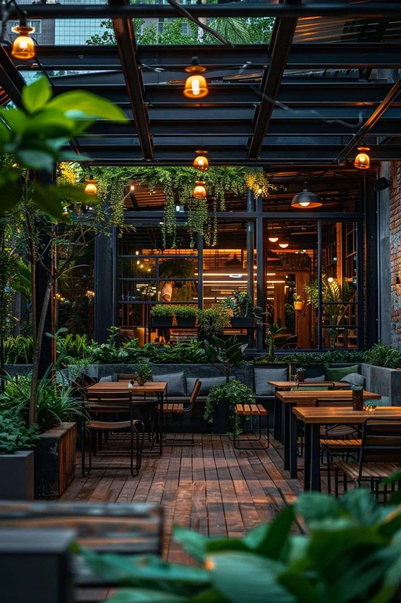

Take a look at Our Gallery

Welcome to D's Kitchen, where the vibrant heart of culture meets the art of culinary craftsmanship. Dive into the heart of tradition with our authentic dishes, simmered to perfection, and our crisp, fresh recipes filled with the finest ingredients. Join us for a meal that’s not just delicious, but a true feast for the senses! At D's Kitchen, every dish is a tribute to timeless flavors and heartfelt hospitality. Our chefs combine traditional techniques with modern flair, creating a menu that celebrates both heritage and innovation. Whether you're joining us for a family meal or a special occasion, we promise an atmosphere that feels like home — warm, welcoming, and filled with the irresistible aroma of freshly prepared food.
we believe that great food brings people closer. That’s why we’ve crafted a dining experience where every detail matters — from the vibrant spices in our signature dishes to the cozy ambiance that welcomes you in. Our commitment to quality, flavor, and hospitality shines through in every plate we serve. Step into D’s Kitchen and discover a place where tradition is honored, taste is celebrated, and every visit feels like coming home.

D's Kitchen opened its doors in 2024 with a heartfelt mission — to serve authentic Vietnamese-inspired meals crafted from the finest ingredients. Our dishes bring the vibrant flavors of Vietnam to your table, combining traditional recipes with a modern twist.
At D's Kitchen, we believe food is more than just a meal — it's an experience. Our space brings together the charm of Vietnamese culture and the energy of American dining, with a lively sports bar and a cozy private karaoke lounge for unforgettable moments.
Whether you're joining us for a casual dinner or a special celebration, D's Kitchen offers more than just food — we offer a taste of tradition, community, and heartfelt hospitality.
Our commitment to authenticity shines through in every bite, from our rich, slow-simmered broths to our vibrant, street-style dishes. We use only the freshest, high-quality ingredients to ensure bold, unforgettable flavors. Our warm and welcoming space is designed to bring people together — whether it's family gatherings, friendly catch-ups, or fun-filled karaoke nights. Blending the best of Vietnamese tradition with modern flair, we create a dining experience that’s both comforting and exciting. At D’s Kitchen, we don’t just serve meals — we serve memories.
We take pride not only in our food but also in the relationships we build with our guests. At D’s Kitchen, every visitor is treated like family — greeted with a smile, served with care, and welcomed back with open arms. Our team is passionate about delivering exceptional service and creating moments that matter, turning first-time visitors into regulars and meals into cherished traditions.
9514975538
Email:info@d'skitchen@gmail.com
Location:Kasarvadavali,Thane,Maharashtra